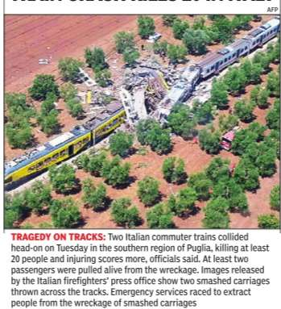
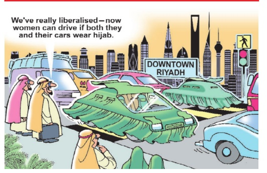

TIMES GLOBAL
THE TIMES OF INDIA,BENGALURU | WEDNESDAY,JULY 13,2016
| INFURIATE AFTER READING A MESSAGE ON FIANCE EGOR |
INFURIATE AFTER READING A MESSAGE ON FIANCE EGOR |
Defiant china gets aggressive in scs
Military Carries Out Flight Tests At Nansha Islands, Inducts New Guided Missile System
Within hours of the Hague international tribunal rejecting China's claims over South China Sea, Chinese officials sent clear signals that Beijing would deal with the emerging situation at the political and military levels. The tribunal ruled in favour of the Philippines, which challenged China's claim over 90% of the South China Sea area.
The Chinese military carried out a series of new manoeuvres that included flight tests in the newly built airport in Nansha islands of South China Sea, and induction of a new guided missile system.The People's Liberation Army said that it will protect the country's sovereignty regardless of the tribunal's ruling.
“Chinese military will resolutely protect its national sovereignty , security and maritime rights and interests; safeguard regional peace and stability; and cope with all kinds of threats and challenges,“ a PLA spokesman said. On the other hand, foreign minister Wang Yi expressed hope that rival Philippines would prefer to hold dialogue with Beijing instead of harping on the tribunal judgement.
“This farce is now over.

It is time to get back to the right track,“ Wang said, adding, “China has taken note of signals from the Philippines government that it's willing to resume discussions with China over the South China Sea.“
The ruling may be a serious loss of face for China in Asean area over which it has tremendous influence.
China has successfully blocked discussions on South China Sea in successive meetings of the Asean in recent years. Not surprisingly , political observers said China will use its considerable clout to persuade Asean countries to reject the verdict. It will also aggressively build its military presence in the area, fortified recently with five watch tow ers. The state broadcaster announced that Cambodia, one of the Asean countries, has spoken out against the tribunal's ruling. But it may be tough to persuade other countries in the region like Vietnam, Indonesia and Malaysia to do so because they are in dispute with China over the issue.
Cameron chairs last cabinet meet as PM
London AGENCIES: British Prime Minister David Cameron chaired a farewell cabinet meeting on Tuesday as moving vans pulled up to his 10 Downing St residence a day before he is replaced as leader following Britain's vote to leave the EU.
Ministers gathered for Cameron's 215th and final weekly cabinet session a day after home secretary Theresa May was confirmed as the new Conservative leader and PMin-waiting. Culture secretary John Whittingdale said there had been a “touch of sadness“ to the meeting, which saw May and treasury chief George Osborne led tributes to Cameron.
Cameron's spokeswoman, Helen Bower, said ministers banged the cabinet table in approval and tribute at the end of the meeting. Osborne and May cited his achievements, including legalising same-sex marriage, reform of schools and an increased minimum wage -but the relationship with Europe looks set to define his legacy.
Nepalese govt in crisis as Maoists withdraw support
CPN(M-C) Says It Has Backing To Form Next Govt Under Prachanda
Prime Minister KP Oli-led coalition government plunged into a crisis on Tuesday after its alliance partner Communist Party of Nepal (Maoist-Centre) withdrew support to the nine-month-old government, accusing him of failing to implement past agreements.
In a later development, the CPN claimed that it has been promised backing by the Nepali Congress -the largest party inNepal's parliament -to form a new government under CPN (M-C) chairman Pushpa Kamal Dahal `Prachanda'. Maoist Centre leader Krishna Bahadur Mahara said, “The two parties have agreed to form the first round of government under CPN (Maoist Centre), and the NC for the second round for implementation of the Constitution.“ He said the agreement to form the next government will be made public by Wednesday .
Earlier, 'Prachanda' announced the withdrawal of support from the CPN-UMLled coalition government, saying Oli's party was hesitating to implement the past agreements -the nine-point agreement signed between CPN-UML and the MaoistCentre in May and the gentlemen's agreement for the change of guard. In a letter addressed to the PM, Prachanda referred to the promulgation of new constitution and the past agreements, and said his party was always in favour of forging a national consensus.
B'desh to erase provocative speeches from the internet
Dhaka PTI: Bangladesh is preparing to erase “extremely provocative“ Islamist speeches from the internet a day after it banned the Peace TV , run by India's controversial preacher Zakir Naik, a senior minister said on Tuesday .
“We already issued a circular, now a specific directive is being issued for the BTRC (Bangladesh Telecommunication Regulatory Authority) to find out and erase provocative speeches of Islamist leaders.Zakir Naik's speeches will also be erased,“ information minister Hasanul HaqInu said he has asked his office to ensure that the directive reaches BTRC by Wednesday .
Earlier, BTRC chairman Shahjahan Mahmood said that the regulatory body awaited a government directive to erase the provocative speeches from the internet after it emerged that perpetrators of the two recent Islamist attacks in the country were inspired by Naik or some other Islamist leaders.
Posters asking for military coup crop up overnight across 13 Pakistani cities
Campaign Comes Amid Talks PM Unlikely To Extend Gen Sharif's Term
A vigorous poster campaign across Pakistani cities urging army chief General Raheel Sharif to impose martial law and form a government of technocrats has been launched, bearing large photographs of the mustachioed general.
The banners surfaced overnight days after Prime Minister Nawaz Sharif 's return to the country after more than a month-long leave for a heart surgery in London.
Sources close to the PM said Sharif is now unlikely to extend the army chief 's term in office amid speculation of “something is cooking“ in a country ruled by the military for more than half its history.
The posters appeared on major thoroughfares in at least 13 cities, including Islamabad, Lahore, Karachi and Rawalpindi, besides several cantonment areas, urging the general to take over. Move on Pakistan, a largely unknown political party , claimed the campaign. “Jaane ki baatein ho gayee puraani, khuda ke liye ab ajao (talk of leaving office is old now; for God's sake appear on the scene now),“ scream the posters. The army chief is due to retire in November. While the military's media wing is silent on this, observers suspect the involvement of intelligence agencies.
“Dictatorship is much better than this corrupt government,“ said Ali Hashmi of Move on Pakistan, founded in 2013. “The way General Sharif has dealt with terrorism and corruption, there's no guarantee that the next man would be as effective as him,“ he said.
Sanders endorses Clinton, cementing Democrats' unity
Portsmouth AGENCIES: After 14 months of policy clashes and moments of mutual disdain, Bernie Sanders endorsed Hillary Clinton for the Democratic presidential nomination on Tuesday , clearing away the last major obstacle to a united Democratic front heading into the party's convention this month and the general election this fall. Entering the high school gymnasium together and waving and shaking hands along the rope line and from the stage, Clinton and Sanders stood before a giant American flag image flanked by Clinton's motto, “Stronger Together.“ They appeared to chat briefly before Sanders spoke, and he patted her on the back -yet no hug -before Sanders stepped forward to cheers to “Unity!“ “Secretary Clinton has won the Democratic nominating process,“ Sanders said, as cheers erupted and Clinton broke into a wide smile.“And I congratulate her for that. She will be the Democratic nominee for president, and I intend to do everything I can to make certain that she will be the next president of the United States. I have come here to make it as clear as possible why I am endorsing Hillary Clinton and why she must become our next president.“
He said, “Hillary Clinton understands that we must fix an economy in America that is rigged and that sends almost all new wealth and income to the top one percent. She understands that if someone in America works 40 hours a we ek, that person should not be living in poverty.“
Democrats have coalesced around Clinton's candidacy since she defeated Sanders in primaries last month in California and five other states, led by endorsements from President Barack Obama, Vice-President Joe Biden and others. Sanders has spent the past month seeking to influence the party's platform at the Philadelphia convention and promote electoral reforms, including allowing independents to participate in future primaries.
TRAIN CRASH KILLS 20 IN ITALY

Two ittalian commuters He said, “Hillary Clinton understands that we must fix an economy in America that is rigged and that sends almost all new wealth and income to the top one percent.
Cameron chairs last cabinet meet as PM amid 'touch of sadness'
London: British Prime Minister David Cameron chaired a farewell cabinet meeting on Tuesday as moving vans pulled up to his 10 Downing St. residence a day before he is replaced as leader following Britain's vote to leave the European Union.
Ministers gathered for Ca meron's 215th and final weekly cabinet session a day after home secretary Theresa May was confirmed as the new Conservative leader and PM-in-waiting. Culture secretary John Whittingdale said there had been a “touch of sadness“ to the meeting, which saw May and treasury chief George Osborne led tributes to Cameron.
Cameron's spokeswoman, Helen Bower, said ministers serving of our respect and not our scorn. And when anyone, no matter how good their inten riage, reform of schools and an increased minimum wage -but the relationship with Europe looks set to define his legacy.
May will come under imme diate pressure from EU leaders to set out a timetable for Brexit.The European Commission's economy chief Pierre Moscovici urged May to accelerate the process. German Chancellor Angela Merkel said late on Monday: “The United Kingdom will need to quickly clarify how it wants its ties with the European Union to be in future.“
LIKE THAT ONLY jug Suraiya

Painter sued for $5m, must prove didn't create canvas
Graham Bowley
After 14 months of policy clashes and moments of mutual disdain, Bernie Sanders endorsed Hillary Clinton for the Democratic presidential nomination on Tuesday , clearing away the last major obstacle to a united Democratic front heading into the party's convention this month and the general election this fall. Entering the high school gymnasium together and waving and shaking hands along the rope line and from the stage, Clinton and Sanders stood before a giant American flag image flanked by Clinton's motto, “Stronger Together.“
So when Doig, whose eerie, magical landscapes have made him one of the world's most popular artists, was sent a photograph of a canvas he said he didn't recognise, he disavowed it. “I said, `Nice painting,'“ he recalled in an interview. “`Not by me.'“ The owner, however, disagreed and sued him, setting up one of the stranger art authentication cases in recent history . The owner, a former corrections officer who said he knew Doig while working in a Canadian detention facility, said the famous painter indeed created the work as a youthful inmate there. His suit contends that Doig is eit her confused or lying and that his denials blew up a plan to sell the work for millions of dollars. But Doig, 57, has compelling evidence he was never near the facility, the Thunder Bay Correctional Center, about 15 hours north of Toronto. “This case is a scam, and I'm being forced to jump through hoops to prove my whereabouts over 40 years ago,“ he said. To Doig's surprise, though -and the astonishment of others in the art world -a federal judge in Chicago has set the case for trial next month at US district court for Northern Illinois. Art law experts say they can't recall anything like it, certainly not for a major artist like Doig.
“To have to disprove that you created a work seems somehow wrong and not fair,“ said Amy M Adler, a professor at New York University Law School.The stakes are high as well. A Doig painting has sold for more than $25 mil lion. Other works have routinely sold for as much as $10 million. The plaintiffs, who include the correction officer and the art dealer who agreed to help him sell the work, are suing the painter for at least $5 million in damages and seek a court declaration that it is authentic. Disputes about authenticity ,a vexatious topic in the art world, tend to center on the works of dead artists. Legal claims, when they arise, are usually made against experts who have doubted the art's veracity , and not against the artist. But Doig is not the first artist to deny having created a work and still be challenged.
The retired corrections officer, Robert Fletcher, 62, said he bought the painting for $100 from a man named Pete Doige (spelled with an `e'), whom he met in 1975 in Thunder Bay , Ontario.The painting is signed “Pete Doige 76.“
AROUND THE WORLD
No Nazi shrine: Austria seizes Hitler's house
Austria's government moved on Tuesday to seize the house where Adolf Hitler was born to prevent it becoming a site of pilgrimage for neo-Nazis, and the country's interior minister said he wanted to tear it down.Hitler's family lived in the house in Braunau am Inn for only three years around his birth on April 20, 1889; but the fate of the three-storey building has long been the subject of controversy.
Has Imran tied the knot for third time?
Cricketer-turned politician and chairman of Pakistan Teh reek-e-Insaf (PTI) Imran Khan has married for the third time in a simple ceremony in London, media reports claimed on Tuesday.The news surfaced after Khan in a recent interview said that he might consider marrying for the third time. Duynia TV said Khan married a woman belonging to Maneka family in a simple ceremony few days back in London. There was no definite report about his third wife, though Geo identified her with single name Mariam.However, PTI party rejected the news as rumour.
Thieves hack Taiwan cash machines to extract $2m:
Thieves suspected of installing a computer programme that got cash machines in Taiwan to churn out more than $2 million were being hunted by police on Tuesday, officials said. The masked robbers ransacked more than 30 ATMs at the Taipei-based First Commercial Bank, walking away “with bags packed with cash“, the bank said. It suggested that a malware programme may have been installed on the ATMs.
Austria's government moved on Tuesday to seize the house where Adolf Hitler was born to prevent it becoming a site of pilgrimage for neo-Nazis, and the country's interior minister said he wanted to tear it down.